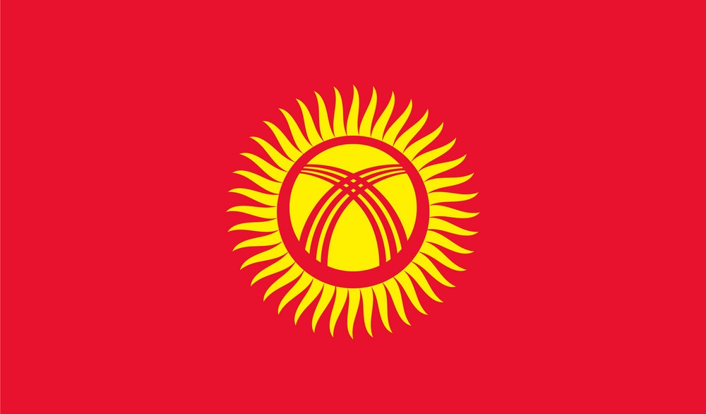
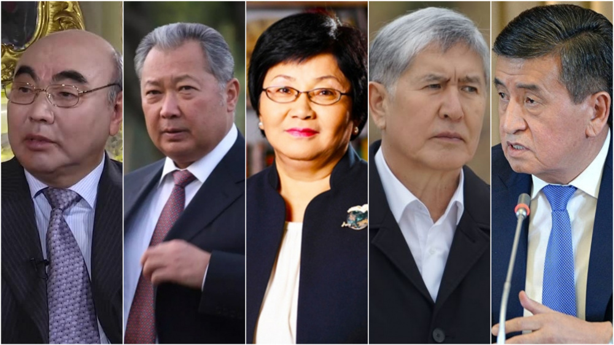

Presidents of Kyrgyzstan
published by Zhazgul Ablakeeva
The president directs the executive branch of the national government.
Sadyr Japarov is the 6th and current preident of Kyrgyzstan.
| Photo |
Name |
Items |
|

|
Qualifications |
- Age between 35-65
- Knowing Kyrgyz language
- Living in country minimum 15 years
|
|  |
Chronology of Kyrgyzstan presidents |
- Askar Akaev
- Kurmanbek Bakiev
- Roza Otumbaeva
- Almazbek Atambaev
- Sooronbay Dzheenbekov
|
Roza Otumbaeva